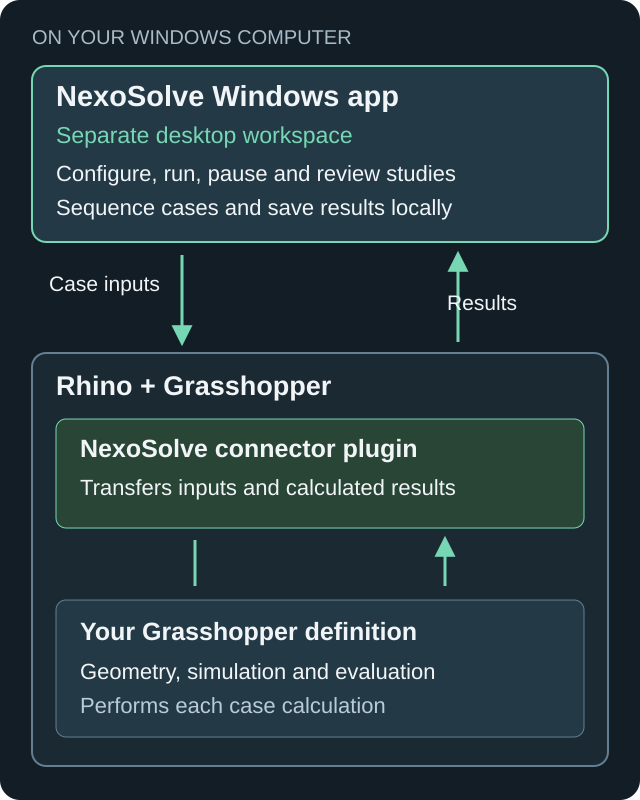

NEXOSOLVE / DOCUMENTATION
Plan. Run. Keep the evidence.
NexoSolve is a Windows desktop workspace for exhaustive finite studies, connected to a Grasshopper definition. The desktop owns sequencing and local persistence; Grasshopper owns geometry, simulation and numeric calculations.
This reference covers the current 0.0.4 Beta source workflow: eight active components. It does not present optimizer prototypes as current study modes. Windows x64, Rhino 8.34+ with Grasshopper and .NET 8 are the supported site requirements. Public distribution and local source revision are separate facts.
Set up a first study
- Install the Grasshopper plugin through the existing product route. Place NexoSolve Club from Help, then use Download / Update NexoSolve to install the separate Windows app and samples.
- Connect a native slider directly to Nexo Variable, or set explicit values in Nexo Custom Variable. Send its numeric Value to your calculation.
- Connect scalar results to Nexo Output. Optionally register meshes with Nexo Shape and saved camera views with Nexo Screenshot.
- Wire Variable, Output, Shape and Screenshot descriptors to the matching NexoSolve Connector inputs. Leave App Path blank for normal installed-app discovery.
- Keep Rhino and your GH definition open. Click Open NexoSolve on Connector, choose New study in the desktop and select a results destination outside the installation folder.
- Review Model, Project, Execution and Completion. Confirm the reviewed values before Run simulation becomes available. Begin with a small definition and verify its outputs.

How the finite study runs
For each registered variable, the plan uses an explicit ordered list or a finite decimal range. It enumerates their Cartesian product, with the last registered variable advancing fastest. Cases are evaluated serially.
Dᵢ = {minᵢ + k·stepᵢ : k = 0…floor((maxᵢ−minᵢ)/stepᵢ)}
nᵢ = |Dᵢ|; N = ∏ᵢ nᵢ
Example: Width = [2,3,4], Height = [1,2,3] → N = 9Variable IDs and display names must be unique. Explicit lists must be nonempty, distinct and within their declared bounds. Counts use checked arithmetic. A range maximum is included only if the step reaches it. This is enumeration, not automatic optimization.
Find a component
Study / Inputs and records
Nexo Variable
Register a native slider and its metadata.
Connect exactly one native number slider directly. The live domain and representable increment are read from its accuracy settings, then sent to the desktop as a variable descriptor.
- Inputs
- Slider; unique Name; optional Description and Unit.
- Outputs
- Current numeric Value and a typed Variable descriptor.
Formula / logic
Float increment Δ = 10^(−decimal places)
Integer Δ = 1; even/odd Δ = 2
n = floor((maximum − minimum)/Δ) + 1Slider expressions are rejected. Bounds are snapped to representable values. Wire Value into your model and Variable into Connector Variables.
Back to component index ↑Nexo Custom Variable
Define an ordered list of actual study values.
Double-click to edit the name, description, unit and explicit decimal values. The selected entry drives the Value output; the desktop evaluates the list entries without interpolating intermediate values.
- Inputs
- No wired inputs; edit the list and metadata in the component editor.
- Outputs
- Selected Value and typed Variable descriptor.
Formula / logic
D = [v₀, v₁, …, vₙ₋₁]
Value = D[selected index]; count = nUse a nonempty list of distinct values. For example, [0.3, 0.5, 0.8] has three cases for that variable. Editing is gated while a study is active.
Back to component index ↑Nexo Output
Register one scalar numeric result.
Place this after a calculation in your definition. It labels the output, passes through its current scalar value and provides a descriptor for the connector.
- Inputs
- Value; unique Name; optional Unit.
- Outputs
- Numeric Value and typed Output descriptor.
Formula / logic
y = fGH(x)
Record y only when it is one finite scalarfGH is your Grasshopper calculation, not a built-in NexoSolve simulator. Missing, non-finite or list-valued results are errors; the descriptor remains available to report the failed case. Do not substitute sentinel numbers for failure.
Back to component index ↑Nexo Shape
Record optional meshes with each case.
Group valid meshes under a unique name and wire the descriptor to Connector Shapes. The registered mesh data is serialized with the case geometry.
- Inputs
- Meshes list; unique Name.
- Outputs
- Typed Shape descriptor.
Formula / logic
Mesh = {vertices: [x,y,z][], faces: index arrays}
Triangle: [a,b,c]; quad: [a,b,c,d]Mesh inputs are flattened. A missing mesh set produces a warning; invalid meshes are rejected. This records geometry, not an objective or a performance result. Geometry transport is bounded by the connector message limit.
Back to component index ↑Nexo Screenshot
Save a Rhino camera for per-case images.
Arrange the active Rhino viewport and click Save viewport on the component. Register that view with Connector Screenshots; duplicate components for additional views.
- Inputs
- Unique Name; Width and Height in pixels.
- Outputs
- Typed Screenshot descriptor.
Formula / logic
64 ≤ Width, Height ≤ 2048
Imageᵢ = capture(saved camera, case geometryᵢ)The saved camera must be present and enabled before running. Changing image dimensions updates the stored view settings. Camera capture is performed in Rhino, not by the documentation animation.
Back to component index ↑Connect / Run and review
NexoSolve Connector
Connect the desktop to this Grasshopper model.
Collect the typed descriptors, start the local named-pipe connection and use Open NexoSolve to launch the installed desktop for this document. The desktop sequences cases; Grasshopper evaluates the model.
- Inputs
- Enabled; optional App Path; Variables; Outputs; optional Shapes and Screenshots; Project Name; optional Results Parent Folder.
- Outputs
- State; Pipe; Model Fingerprint; Results Folder.
Formula / logic
candidate x → set registered values → solve GH
→ collect outputs → commit case locallyKeep Rhino and Grasshopper open. One active study per Rhino and one desktop window per Windows session are supported. Use External data / solver revision when undeclared file, API, solver or random-state dependencies change. No optimizer selection is part of this finite-study route.
Back to component index ↑Run Results Analysis
Open a read-only analysis of saved results.
Supply a saved results folder, or leave the input disconnected and choose a registered study. Click Open analysis / Choose project to open the local analysis workspace.
- Inputs
- Optional Results Folder.
- Outputs
- No wired outputs; opens the local results analysis UI.
Formula / logic
saved study → prepared snapshot → descriptive analysis
No new Grasshopper evaluation is startedAt least one recorded case is required. A connected but empty folder input is an error. Partial or independent saved studies can be inspected. The snapshot is read-only; later runs/retries require reopening to see updated data.
Back to component index ↑Help / Setup and samples
NexoSolve Club
Install/update the desktop, browse samples and open help.
Place Club from NexoSolve > Help. Download / Update NexoSolve installs or updates the Windows app and official samples; its other actions open help/community and sample definitions.
- Inputs
- No wired inputs; explicit on-component actions.
- Outputs
- No wired outputs; installation/status messages and opened resources.
Formula / logic
user action → download + verify → install app/samples
Plugin update → Rhino Package ManagerThe GHA and Windows app are separate. Close the desktop before updating it. Download checks package checksum and executable metadata. Internet is needed for download; do not treat local source or this Wiki as proof of the current public build. Legacy Installer/Samples are not the preferred new-definition route.
Back to component index ↑Pause, resume and update domains
Pause simulation finishes and saves the active case, then restores the original controlled values. Wait for the saved confirmation before closing the apps. Keep the original GH file saved so its linked project can be rediscovered.
Reopen the same compatible model and choose Resume simulation. Help > Open saved study supports manual results-folder selection. Resume preserves the original plan and execution settings; it starts at the first unrecorded case. An occupied project folder offers resume, explicit restart or cancel rather than silently making another study.
Update domain is separate from Resume. It generates a changed plan for a compatible calculation and can reuse successful results by actual variable IDs/values and calculation signature. Failed cases are retried. A calculation change blocks reuse; update the Connector external revision for external files, APIs, solver settings or random-state changes that cannot be inferred.
Synchronous GH components cannot be forcibly interrupted. Pause or timeout can wait for the active solution to return. Cancellation of report waiting is allowed before saving starts; a committed replacement remains authoritative if a derived export fails. Restoring baseline copies is manual. External simulations must manage their own repeated side effects.
Local records and analysis
The cases directory contains authoritative atomic records. study.json stores study settings and recovered progress; results.csv is a rebuilt numeric export. Per-scenario outputs can include result/mesh JSON and saved-camera PNGs. Model backups preserve recorded context. Keep results outside the install folder.
Failures carry explicit statuses and null numeric values, not sentinel numbers. A committed case is retained; an uncommitted attempt can be retried. Run Results Analysis opens a prepared read-only snapshot, including partial studies with recorded cases.
The local workspace offers descriptive statistics, scatter plots, Pearson/Spearman correlation with pair counts, and weighted ranking. Missing/non-finite values affect eligibility; exported analysis includes population, metric and setting context. A snapshot does not change after later runs or retries—reopen it to refresh.
Normalized ranking, for nonconstant metric j:
uⱼ = (xⱼ − minⱼ)/(maxⱼ − minⱼ)
benefitⱼ = uⱼ for maximize, 1 − uⱼ for minimize
score = 100 · Σⱼ (wⱼ / Σw) · benefitⱼA constant metric maps to 0.5. The normalized weights derive from positive user-selected terms. Raw weighted ranking is also available and depends on units. Ranking is a user-defined comparison, not an optimizer. Correlation does not establish causation or validate the Grasshopper simulation.
Legacy and experimental components
NexoSolve Installer and NexoSolve Samples are hidden compatibility components for saved definitions. Use Club for new definitions. Nexo Decision Variable and Nexo Response are hidden prototype contracts; they are not the supported registration route for the current desktop finite-study workflow.
The separate optimizer drafts in the source repository are not current desktop modes and are not benchmark-validated reference implementations. This Wiki deliberately documents the active serial finite-study route.
For installation availability, pricing and licensing enquiries, see the NexoSolve product overview. Documentation does not activate a license, send email, download the app or run Grasshopper.